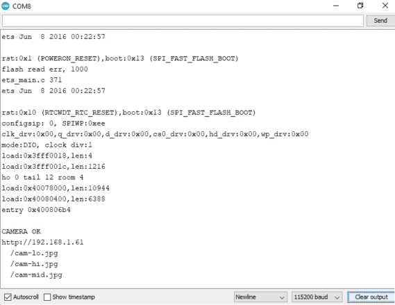

Face Recognition Based Attendance System using ESP32 CAM

Overview: Face Recognition Attendance System using ESP32 CAM
This tutorial introduces the topic of the Face Recognition Based Attendance System using ESP32 CAM Module. We will be using OpenCV & Visual Studio for this application. OpenCV is an open-sourced image processing library that is very widely used not just in industry but also in the field of research and development. Visual Studio is an IDE made by Microsoft for different types of software development & contains completion tools, compilers, and other features to facilitate the software development process.
In this project we will learn, how to create a Face Recognition Based Attendance system using ESP32 CAMspan> and Python. The main heavy program will be at the server-side that is our computer, or one can even use raspberry-pi as a server. In this attendance system, we will not just detect the person but also store the information of the person detected in a Microsoft Excel File. Moreover, the duration of time they have stayed in the frame is also recorded into an excel sheet.
The tutorial also contains information about features, pins description, and the method to program ESP32 Camera Module using FTDI Module. We will also set up the Arduino IDE for the ESP32 Camera Module. We will also upload the firmware and then work on the Face Recognition part. The script for Face Recognition is written in the python programming language, thus we will also have to install Python and its required Libraries.
Earlier we made Fingerprint Attendance System as well as RFID Attendance System. But this is a different project that doesn’t need any biometric contact or any use of the card. The ESP32 Camera will capture image & store the information in Excel file.
This tutorial introduces the topic of the Face Recognition Based Attendance System using ESP32 CAM Module. We will be using OpenCV & Visual Studio for this application. OpenCV is an open-sourced image processing library that is very widely used not just in industry but also in the field of research and development. Visual Studio is an IDE made by Microsoft for different types of software development & contains completion tools, compilers, and other features to facilitate the software development process.
In this project we will learn, how to create a Face Recognition Based Attendance system using ESP32 CAM and Python. The main heavy program will be at the server-side that is our computer, or one can even use raspberry-pi as a server. In this attendance system, we will not just detect the person but also store the information of the person detected in a Microsoft Excel File. Moreover, the duration of time they have stayed in the frame is also recorded into an excel sheet.
The tutorial also contains information about features, pins description, and the method to program ESP32 Camera Module using FTDI Module. We will also set up the Arduino IDE for the ESP32 Camera Module. We will also upload the firmware and then work on the Face Recognition part. The script for Face Recognition is written in the python programming language, thus we will also have to install Python and its required Libraries.
Bill of Materials
The following is the list of Bill of Materials for building an Attendance System Project. TheESP32 CAM when combined with other hardware & firmware identify the object & record attendance.You can purchase all these components from Amazon.
The following is the list of Bill of Materials for building an Attendance System Project. TheESP32 CAM when combined with other hardware & firmware identify the object & record attendance.You can purchase all these components from Amazon.
| S.No |
Components |
Quantity |
Purchase Link |
| 1 |
ESP32-CAM Board AI-Thinker |
1 |
Amazon |
| 2 |
FTDI Module |
1 |
Amazon | X
| 3 |
Micro-USB Cable(Type-C) |
1 |
Amazon |
| 4 |
Jumper Wires |
10 |
Amazon |
ESP32 CAM Module
The ESP32 Based Camera Module developed by AI-Thinker. The controller is based on a 32-bit CPU & has a combined Wi-Fi + Bluetooth/BLE Chip. It has a built-in 520 KB SRAM with an external 4M PSRAM. Its GPIO Pins have support like UART, SPI, I2C, PWM, ADC, and DAC.
The ESP32 Based Camera Module developed by AI-Thinker. The controller is based on a 32-bit CPU & has a combined Wi-Fi + Bluetooth/BLE Chip. It has a built-in 520 KB SRAM with an external 4M PSRAM. Its GPIO Pins have support like UART, SPI, I2C, PWM, ADC, and DAC.
The module combines with the OV2640 Camera Module which has the highest Camera Resolution up to 1600 × 1200. The camera connects to the ESP32 CAM Board using a 24 pins gold plated connector. The board supports an SD Card of up to 4GB. The SD Card stores capture images.
To learn in detail about the ESP32 Camera Module you can refer to our previous Getting Started Tutorial.
ESP32-CAM FTDI Connection
The board doesn’t have a programmer chip. So In order to program this board, you can use any type of USB-to-TTL Module. There are so many FTDI Module available based on CP2102 or CP2104 Chip or any other chip.
Make a following connection between FTDI Module and ESP32 CAM module.
The board doesn’t have a programmer chip. So In order to program this board, you can use any type of USB-to-TTL Module. There are so many FTDI Module available based on CP2102 or CP2104 Chip or any other chip.
Make a following connection between FTDI Module and ESP32 CAM module.

| ESP32-CAM |
FTDI Programmer |
| GND |
GND |
| 5V |
VCC |
| UOR |
TX |
| UOT |
RX |
| GPIO0 |
GND |
Connect the 5V & GND Pin of ESP32 to 5V & GND of FTDI Module. Similarly, connect the Rx to UOT and Tx to UOR Pin. And the most important thing, you need to short the IO0 and GND Pin together. This is to put the device in programming mode. Once programming is done you can remove it.
Connect the 5V & GND Pin of ESP32 to 5V & GND of FTDI Module. Similarly, connect the Rx to UOT and Tx to UOR Pin. And the most important thing, you need to short the IO0 and GND Pin together. This is to put the device in programming mode. Once programming is done you can remove it.
Installing ESP32CAM Library
Here we will not use the general ESP webserver example rather another streaming process. Therefore we need to add another ESPCAM library. The esp32cam library provides an object oriented API to use OV2640 camera on ESP32 microcontroller. It is a wrapper of esp32-camera library.

Go to the following Github Link and download the zip library as in the image
Once downloaded add this zip library to Arduino Libray Folder. To do so follow the following steps:
Open Arduino -> Sketch -> Include Library -> Add .ZIP Library… -> Navigate to downloaded zip file -> add
Source Code/Program for ESP32 CAM Module
Here is a source code for Face Recognition Based Attendance System using ESP32 CAM & OpenCV. Copy the code and paste it in the Arduino IDE.
#include <WebServer.h>
#include <esp32cam.h>
#include <WiFi.h>>
const char* WIFI_SSID = "ssid";
const char* WIFI_PASS = "password";
WebServer server(80);
static auto loRes = esp32cam::Resolution::find(320, 240);
staic auto midRes = esp32cam::Resolution::find(350, 530);
staic auto hiRes = esp32cam::Resolution::find(800, 600);
voi serveJpg()
{
auto frame = esp32cam::capture();
if (frame == nullptr) {
Serial.println("CAPTURE FAIL");
server.send(503, "", "");
return;
}
Serial.printf("CAPTURE OK %dx%d %db\n", frame->getWidth(), frame->getHeight(),
static_cast(frame->size()));
server.setContentLength(frame->size());
server.send(200, "image/jpeg");
WiFiClient client = server.client();
frame->writeTo(client);
}
void handleJpgLo()
{
if (!esp32cam::Camera.changeResolution(loRes)) {
Serial.println("SET-LO-RES FAIL");
}
serveJpg();
}
void handleJpgHi()
{
if (!esp32cam::Camera.changeResolution(hiRes)) {
Serial.println("SET-HI-RES FAIL");
}
serveJpg();
}
void handleJpgMid()
{
if (!esp32cam::Camera.changeResolution(midRes)) {
Serial.println("SET-MID-RES FAIL");
}
serveJpg();
}
void setup(){
Serial.begin(115200);
Serial.println();
{
using namespace esp32cam;
Config cfg;
cfg.setPins(pins::AiThinker);
cfg.setResolution(hiRes);
cfg.setBufferCount(2);
cfg.setJpeg(80);
bool ok = Camera.begin(cfg);
Serial.println(ok ? "CAMERA OK" : "CAMERA FAIL");
}
WiFi.persistent(false);
WiFi.mode(WIFI_STA);
WiFi.begin(WIFI_SSID, WIFI_PASS);
while (WiFi.status() != WL_CONNECTED) {
delay(500);
}
Serial.print("http://");
Serial.println(WiFi.localIP());
Serial.println(" /cam-lo.jpg");
Serial.println(" /cam-hi.jpg");
Serial.println(" /cam-mid.jpg");
server.on("/cam-lo.jpg", handleJpgLo);
server.on("/cam-hi.jpg", handleJpgHi);
server.on("/cam-mid.jpg", handleJpgMid);
server.begin();
}
void loop()
{
server.handleClient();
}
Before Uploading the code you have to make a small change to the code. Change the SSID and password variable and in accordance with your WiFi network.
Now compile and upload it to the ESP32 CAM Board. But during uploading, you have to follow few steps every time.
- Make sure the IO0 pin is shorted with the ground when you have pressed the upload button.
- If you see the dots and dashes while uploading press the reset button immediately
- Once the code is uploaded, remove the I01 pin shorting with Ground and press the reset button once again.
- If the output is the Serial monitor is still not there then press the reset button again.
Now you can see a similar output as in the image below.

Here, copy the IP address visible, we will be using it to edit the URL in python code
Installing Visual Studio
Now in order to proceed further, we need to Install Visual studio. We are doing so because there are certain dependencies that we will be required, to install the libraries, later in this tutorial. To install go to this Visual Studio website. Then, download the latest community version.
Once downloaded install the software a welcome installation screen would appear, now select the community version.
After this from numerous selecting boxes, select Desktop development with C++. At the right-hand side select the boxes as in the image below.
Now that you have selected the click on Install/Modify at the Right corner below. This process will take time as it will download large files.
Once installed it will ask for restarting the PC. So that will be done automatically.
Now open the downloaded zip folder from the link below & Extract it.
Now open the command prompt and reach the same directory.
In command prompt write following command:
1pip install -r requirements.txt
And press enter. All the necessary files will be installed.
Now we need to add the users who need to be detected, in the image_folder folder(this is inside the zip folder that you downloaded).
In my case I have added the images of 3 people, one is me and the other two are celebrities.
Python Code for Face Recognition Attendance System
Now copy the code in face_detection.py We also need to edit it.
import pandas as pd
import cv2
import urllib.request
import numpy as np
import os
from datetime import datetime
import face_recognition
path = r'D:\python\attendace\attendace\image_folder'
url='http://192.168.231.162/cam-hi.jpg'
##'''cam.bmp / cam-lo.jpg /cam-hi.jpg / cam.mjpeg '''
if 'Attendance.csv' in os.listdir(os.path.join(os.getcwd(),'attendace')):
print("there iss..")
os.remove("Attendance.csv")
else:
df=pd.DataFrame(list())
df.to_csv("Attendance.csv")
images = []
classNames = []
myList = os.listdir(path)
print(myList)
for cl in myList:
curImg = cv2.imread(f'{path}/{cl}')
images.append(curImg)
classNames.append(os.path.splitext(cl)[0])
print(classNames)
def findEncodings(images):
encodeList = []
for img in images:
img = cv2.cvtColor(img, cv2.COLOR_BGR2RGB)
encode = face_recognition.face_encodings(img)[0]
encodeList.append(encode)
return encodeList
def markAttendance(name):
with open("Attendance.csv", 'r+') as f:
myDataList = f.readlines()
nameList = []
for line in myDataList:
entry = line.split(',')
nameList.append(entry[0])
if name not in nameList:
now = datetime.now()
dtString = now.strftime('%H:%M:%S')
f.writelines(f'\n{name},{dtString}')
encodeListKnown = findEncodings(images)
print('Encoding Complete')
#cap = cv2.VideoCapture(0)
while True:
#success, img = cap.read()
img_resp=urllib.request.urlopen(url)
imgnp=np.array(bytearray(img_resp.read()),dtype=np.uint8)
img=cv2.imdecode(imgnp,-1)
# img = captureScreen()
imgS = cv2.resize(img, (0, 0), None, 0.25, 0.25)
imgS = cv2.cvtColor(imgS, cv2.COLOR_BGR2RGB)
facesCurFrame = face_recognition.face_locations(imgS)
encodesCurFrame = face_recognition.face_encodings(imgS, facesCurFrame)
for encodeFace, faceLoc in zip(encodesCurFrame, facesCurFrame):
matches = face_recognition.compare_faces(encodeListKnown, encodeFace)
faceDis = face_recognition.face_distance(encodeListKnown, encodeFace)
# print(faceDis)
matchIndex = np.argmin(faceDis)
if matches[matchIndex]:
name = classNames[matchIndex].upper()
# print(name)
y1, x2, y2, x1 = faceLoc
y1, x2, y2, x1 = y1 * 4, x2 * 4, y2 * 4, x1 * 4
cv2.rectangle(img, (x1, y1), (x2, y2), (0, 255, 0), 2)
cv2.rectangle(img, (x1, y2 - 35), (x2, y2), (0, 255, 0), cv2.FILLED)
cv2.putText(img, name, (x1 + 6, y2 - 6), cv2.FONT_HERSHEY_COMPLEX, 1, (255, 255, 255), 2)
markAttendance(name)
cv2.imshow('Webcam', img)
key=cv2.waitKey(5)
if key==ord('q'):
break
cv2.destroyAllWindows()
cv2.imread
First, we need to update the URL variable in the code with the URL copied from Arduino serial monitor earlier.
Secondly, update the path variable in the code with the path of the image_folder folder.
Now we are good to go. So run the code & Stand in front of the ESP32 Camera by showing the face directly to Camera.

Congrats the face has been detected.
Whenever the image of Usain Bolt & Elon Musk is brought in front of the camera, the face is identified and attendance is recorded.
Now press ‘q’ to close.
Now open the Attendace.csv file, it is in the current working directory. Here you will get all the information of people who were detected and at what time.

Now, this ESP32 CAM Face Recognition Based Attendance System can be used as an actual project where you are not just detecting the students or attendees but also storing their attendance in an excel file.